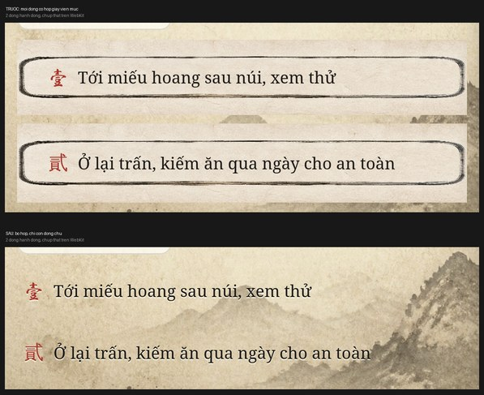

Đã bỏ nền vuông ở dòng hành động
Bản chạy thật trên GitHub Pages · đo bằng Safari (WebKit) ở khổ iPhone 13
Anh nói đúng, mỗi dòng hành động bị đóng trong một cái hộp giấy có viền mực.
Nhìn nặng và thô. Tôi bỏ hẳn cái hộp đó, giờ chỉ còn dòng chữ.
Trước và sau

Trên: mỗi dòng có hộp giấy viền mực. Dưới: đã bỏ hộp, chỉ còn dòng chữ.
Cái hộp đó là gì
Nó không phải cái viền CSS thường, mà là một ảnh giấy được cắt thành 9 mảnh rồi
kéo giãn để lót kín cả viền lẫn ruột nút (border-image ... fill).
Vì lót cả ruột nên nó thành một ô giấy đặc, chứ không chỉ là đường kẻ.
Đo được: trước khi sửa, 2 dòng hành động cho ra
11 đường kẻ ngang chạy gần hết chiều rộng.
Sau khi sửa: 0.
Đã nhỏ lại thật, không chỉ đổi màu
Bỏ hộp thì nút cũng gọn lại theo, vì mất luôn 10px viền và phần đệm dày:
- Chiều cao mỗi dòng: 62px → 44px
(gọn hơn 29%)
- Viền: 10px → 0
- Ảnh nền trong nút: có → không
Vẫn giữ 44px chiều cao chạm — đúng ngưỡng tối thiểu để ngón tay bấm chính xác
trên điện thoại. Nhỏ hơn nữa là bấm nhầm.
Chữ vẫn đọc được không
Đây là chỗ tôi lo nhất, vì bỏ nền là chữ phải nằm trực tiếp trên ảnh nền. Tôi đo
độ đậm của nét chữ so với nền ngay cạnh nó:
Nét chữ đậm 100 trước, 102 sau
(thang 0–255) — không hề nhạt đi. Tương phản tổng thể
12,3:1, vượt xa mức cao nhất của chuẩn WCAG (7:1).
Tôi cũng thêm một bóng chữ mờ để chữ tách khỏi vân giấy.
Đã kiểm những gì
- Safari thật (WebKit) ở cả iPhone 13 và iPad Pro: không tràn ngang,
không lỗi JS.
- Nút vẫn chạm được 44px; nút Lùi hành động bên dưới còn nguyên, không bị đè.
- Chụp đúng màn có 2 dòng hành động liền nhau để thấy rõ khoảng cách.
- Bộ kiểm thử game: 124 đạt và 161 đạt,
0 hỏng.
- Sửa cả hai bản:
game/play.html và docs/game/play.html
(Pages chạy bản trong docs/).
Ảnh btn-choice.jpg tôi không xoá — vẫn còn trong kho ảnh và vẫn
dùng được ở chỗ khác (trang demo). Chỉ dòng hành động trong game là không dùng nữa.
Vào game xem